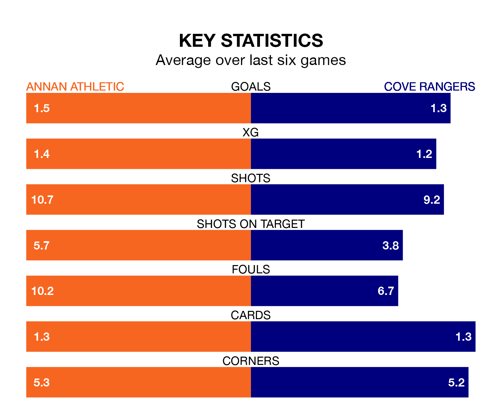

Cove Rangers are strong favourites to take all three points despite Annan Athletic's home advantage in Saturday's match at Galabank.
*Betting Company* are offering odds of 2.0 on Cove sealing the win, with the visitors sitting fifth in League One table.
Annan, who are ninth in the league and 15 points behind the Wee Rangers, are priced at 2.9 to win. A draw is set at 3.6.
In Rumarn Burrell, Cove have one of the league's most on-form strikers so far this season. He has notched 20 goals in 31 appearances, to sit second in the scoring charts.
Annan's top scorers, with nine goals in 28 games each, are Thomas Goss and Aidan Smith.
In the last 10 years, Annan and Cove have played each other on six occasions. Annan won one of them and Cove the other.
On average, the Galabankies scored 1.7 goals and the Wee Rangers 2.3 in those matches.
Their last meeting was on February 24, when Cove won 2-1 at home.
With 45 goals in 32 games so far this season, Athletic are scoring at below the league average rate with 1.4 goals per game. And they are conceding more than average, letting in 61 goals at a rate of 1.9 per game.
Rangers, meanwhile, are average scorers, with 1.6 goals per game. They have conceded 1.7 goals per game.
The Galabankies are in mixed form in League One, with two wins and three draws from their last six games.
With two wins and four losses over that period, the Wee Rangers' form is worse – they have taken six points from 18, compared to the home team's nine.
Annan's last match was on April 6, a 3-1 loss against Hamilton Academical, with Smith getting the goal for the Galabankies.
Cove lost 5-1 against Falkirk last time out, also on Saturday, with Joshua Kerr on the scoresheet.
Updated: 14:47 (UTC), 09/04/24